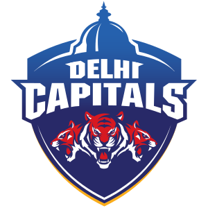
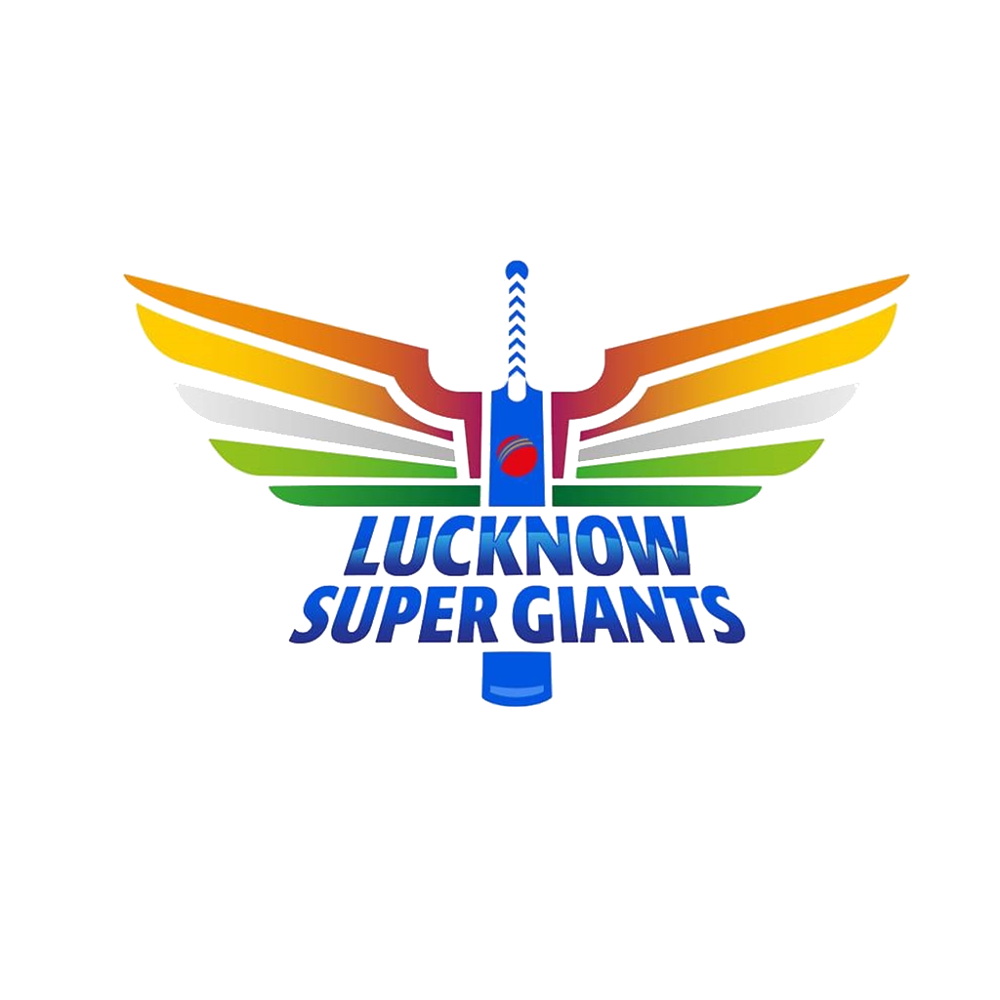
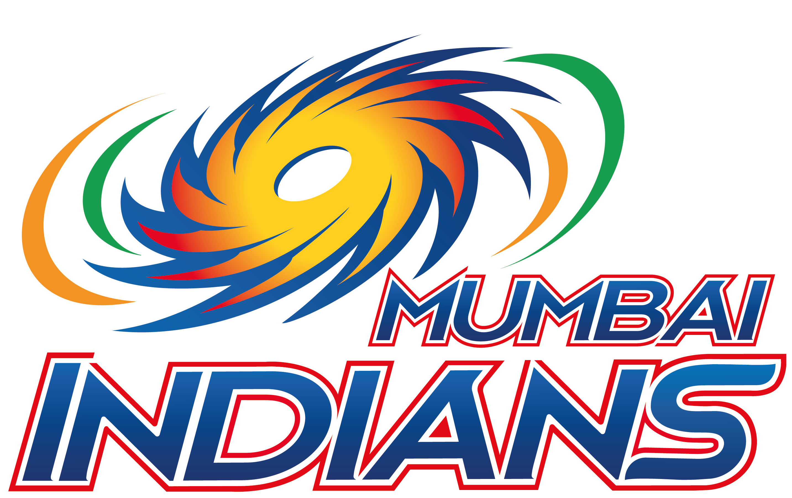
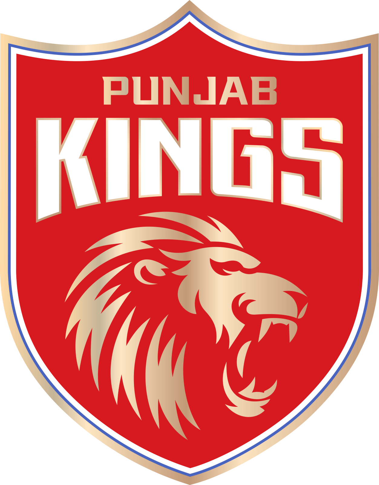
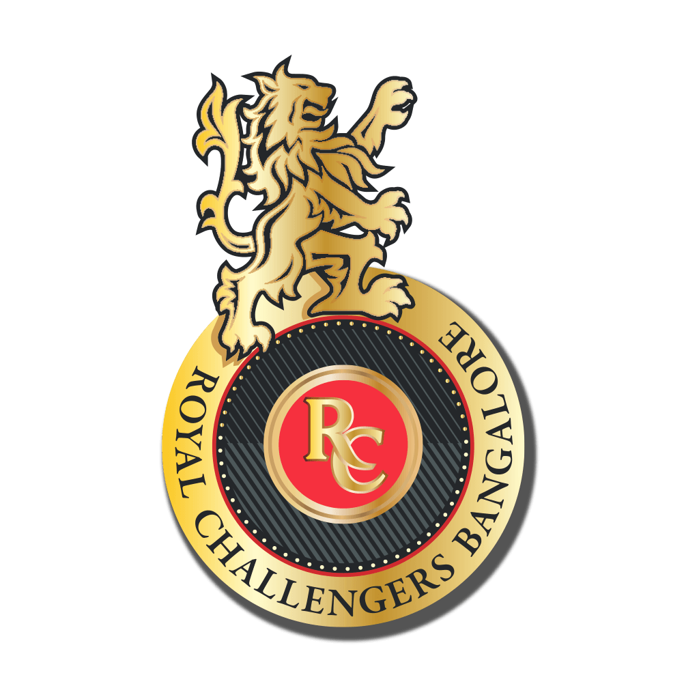

IPL Teams

CSK (Chennai Super Kings) is captained by MS Dhoni and has
been a strong team in the league. Find out more about the
team here.

DC (Delhi Capitals) is captained by Rishab Pant and consists
primarily of youngsters. Find out more about the team here.

GT (Gujarat Titans) is captained by Hardik Pandya and is a
new team this year (2022). Find out more about the team
here.

KKR (Kolkata Knight Riders) is captained by Shreyas Iyer and
is one of the best teams in the league. Find out more about
the team here.

LSG (Lucknow Super Giants) is captained by KL Rahul and is
is a new team this year (2022). Find out more about the team
here.

MI (Mumbai Indians) is captained by Rohit Sharma and has
been a dominant team in the league. Find out more about the
team here.

PK (Punjab Kings) is captained by Mayank Agarwal and has
been an important team in the league. Find out more about
the team here.

RR (Rajasthan Royals) is captained by Sanju Samson and has
been a weaker team in the league. Find out more about the
team here.

RCB (Royal Challengers Bangalore Kings) is captained by Faf
Du Plessis and has been a weaker team in the league despite
its good collection of players. Find out more about the team
here.
.jpg)